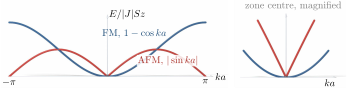

Advanced Quantum Materials 2027 · All lectures · Lecture notes
Session 6. Classical Magnetism and Magnons
6.15 Magnon dispersions in ferromagnets and antiferromagnets
We Fourier transform the bosonic Hamiltonian of Section 6.14 on a Bravais lattice with coordination number \(z\) and first-neighbor structure factor \(\gamma(\mathbf k) = \tfrac1z\sum_{\boldsymbol\delta} e^{i\mathbf k\cdot\boldsymbol\delta}\). For the ferromagnet, with \(J<0\) and \(|J|=-J\), this gives a diagonal magnon Hamiltonian with dispersion
\[E_\text{FM}(\mathbf k) = |J|\,S\,z\big(1-\gamma(\mathbf k)\big). \tag{6.8}\]
This dispersion is zero at \(\mathbf k=0\), as it has to be. A uniform rotation of all the spins costs no energy, and this is the Goldstone mode of the broken spin-rotation symmetry. If we expand \(\gamma(\mathbf k)\) for small \(\mathbf k\) we obtain \(E_\text{FM}(\mathbf k)\propto k^2\), which is a quadratic magnon dispersion, and this is the “gapless, quadratic” ferromagnetic magnon that the lecture points out.
The antiferromagnetic case needs one more step, because the ground state is not “all spins up.” On a bipartite lattice, we apply the Holstein-Primakoff transformation (6.7) separately on the two sublattices, and on the \(B\) sublattice the roles of \(S^+\) and \(S^-\) are exchanged, since these spins point in the opposite direction. We have \(S_i^z=S-a_i^\dagger a_i\) on \(A\), but \(S_j^z=-S+b_j^\dagger b_j\) on \(B\). If we insert this into \(\mathbf S_i\cdot\mathbf S_j\) for a bond between the two sublattices, we obtain not only density terms \(a^\dagger a\) and \(b^\dagger b\), but also anomalous terms \(a_i b_j\) and \(a_i^\dagger b_j^\dagger\), which do not conserve the particle number. This tells us that the magnon vacuum on top of the Néel state is not the bosonic vacuum, and that to diagonalize the Hamiltonian we need a Bogoliubov transformation and not only a Fourier transform. If we do this, we obtain the antiferromagnetic magnon dispersion
\[E_\text{AFM}(\mathbf k) = J\,S\,z\,\sqrt{1-\gamma(\mathbf k)^2}. \tag{6.9}\]
Close to \(\mathbf k=0\) we have \(1-\gamma(\mathbf k)^2 \propto k^2\), so \(E_\text{AFM}(\mathbf k)\propto |k|\). This is a linear dispersion similar to a Dirac cone, which is gapless at the same point but linear and not quadratic. This is the rule “quadratic in ferromagnets, linear in antiferromagnets” from the lecture, which we have now derived and not only stated. It is also one more example, together with the Dirac cones of session 2 and 3, of a linear dispersion that comes from the structure of a symmetry and is not put in by hand. Figure 6.6 shows (6.8) and (6.9) together, with a magnified view of the zone center, so that the parabola and the cone can be distinguished.
